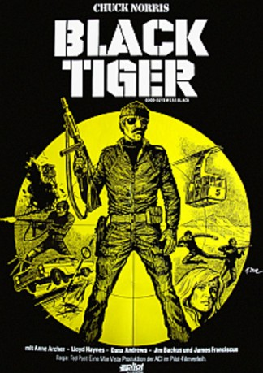

#6007 Black Fighter
Alternativ: Black Tigers (Englischer Titel)
 
 IMDB-Wertung: 5.0 / 10
IMDB-Wertung: 5.0 / 10  Metascore: 0
Metascore: 0 
John T. Booker (Chuck Norris) soll mit seiner Spezialeinheit "Black Tiger" ein paar Kriegsgefangene befreien. Doch sie wurden von ihren Auftraggebern gelinkt und werden zurückgelassen. Doch Booker findet mit ein paar Anderen den Weg zurück in die Zivilisation und kündigt seinen Dienst. Fünf Jahre später wird er von dem damaligen Ereignis eingeholt, denn er steht auf der Todesliste eines Unbekannten. Zusammen mit der Reporterin Margarete (Anne Archer) will er seine ehemaligen Teammitglieder warnen, doch die werden kurz darauf ermordet. Booker und Margarete schweben nun in Lebensgefahr. Booker verdächtigt seinen damaligen Kumpel und Major, Mhin Van Thieu (Soon-Tek Oh).
Jahr: 1978
Dauer: 91 Minuten
FSK: 16
Land: USA Studio: American Cinema ReleasingTonspuren: DD2.0 - ,
Untertitel:
Auflösung: 1080p (1920x1080) Größe: 4730 MB
Genre: Action
Regisseur: Ted Post
Drehbuch: Jacques Davidts
Soundtrack:
Darsteller:
 Chuck Norris als John T. Booker
Chuck Norris als John T. Booker Anne Archer als Margaret
Anne Archer als Margaret- James Franciscus als Conrad Morgan
- Lloyd Haynes als Murray Saunders
 Dana Andrews als Edgar Harolds
Dana Andrews als Edgar Harolds- Jim Backus als Doorman
- Lawrence P. Casey als Mike Potter - The Black Tigers
 Soon-Tek Oh als Mjr. Mhin Van Thieu - The Black Tigers
Soon-Tek Oh als Mjr. Mhin Van Thieu - The Black Tigers- Jerry Douglas als Joe Walker - The Black Tigers
- Aaron Norris als Al - The Black Tigers
- Benjamin J. Perry als Finney - The Black Tigers
- Anthony Mannino als Gordie Jones - The Black Tigers
- Joe Bennett als Lou Goldberg - The Black Tigers
- Stack Pierce als Holly Washington - The Black Tigers
- Michael Payne als Mitch - The Black Tigers
- David Starwalt als Steagle - The Black Tigers
- Don Pike als Hank - The Black Tigers
- Kathy McCullen als Kelly
- Michael Stark als Pitman
- James Bacon als Senator
- Hatsuo Uda als Shoeshine Man
- Virginia Wing als Mrs. Mhin Van Thieu
- Viola Harris als Airline Ticket Agent
- Jacki Robins als Fat Lady
 Pat E. Johnson als C.I.A. Agent
Pat E. Johnson als C.I.A. Agent- Warren Smith als Morgan's Chauffeur
Datei: X:\Person\Chuck Norris\Black Fighter (1978, FSK16, 1920x1080).mkv seit 20.04.2017
Festplatte: HD Collection-7+mehr(A-Z)+Person
 Es gibt insgesamt 17 Filme in der Gruppe 'Person\Chuck Norris'
Es gibt insgesamt 17 Filme in der Gruppe 'Person\Chuck Norris'